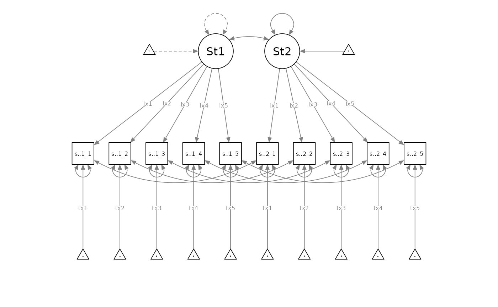
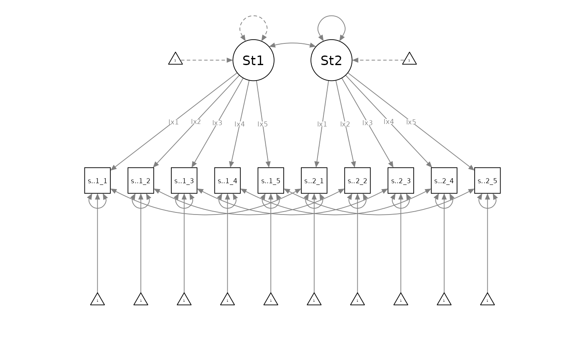
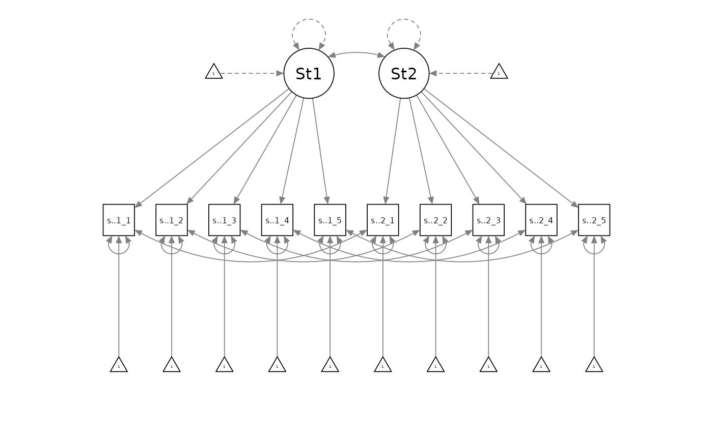

Invariance Testing with Potentially Indistinguishable Dyads: Rationale and Practices for a More Logical and Inclusive Testing Sequence
John K. Sakaluk
12/12/23
Source:vignettes/articles/invariance.Rmd
invariance.RmdThe following resource was made in advance of the 2023 SPSP Close Relationships Preconference, and is part of a working paper. Please cite the following if you are using these materials:
- Sakaluk, J. K. (preprint). Invariance testing with potentially indistinguishable dyads: Practices and rationale for a more logical and inclusive testing sequence. https://jsakaluk.github.io/dySEM/articles/invariance.html
tl;dr:
The normative invariance-testing ritual, including for dyadic measurement models (Sakaluk et al., 2021), involves first fitting a configurally invariant model (i.e., all measurement model parameters free to vary between partners). A loading-invariant model (i.e., loadings constrained to equivalence between partners) is then fit and compared against the configurally invariant model; an intercept-invariant model (loadings and intercepts constrained to equivalence between partners) is then fit and compared against the loading-invariant model, and so on. The final model is determined as the most constrained model that does not appreciably ruin model fit (e.g., producing a significant nested-model comparison, producing a decrease in some other absolute/relative model fit index beyond a particular threshold, etc.).
This ritual can be consider flawed and/or problematic for at least three reasons:
- The ritual begins with the specification of–and testing against–the least parsimonious dyadic measurement model, as opposed to the most parsimonious.
- The ritual involves the inverting of traditional null-hypothesis significance testing logic (under most circumstances, such that noninvariance is considered undesirable)
- The ritual tacitly promotes a mindset where “distinguishability is the default”, at the expense of indistinguishable dyad types (e.g., same-sex and/or same-gender couples) that have been historically excluded from relationship science
A More Logical and Inclusive Testing Sequence
Measurement-Level vs. Structural-Level Indistinguishability
In structural equation modeling with latent variables, a distinction is typically made between the measurement model and the structural model. The measurement model includes all parameter types that govern the indicator variables (e.g., questionnaire items) and their statistical relationships to the latent variable(s) being modeled. These include:
- item intercepts (contained in the \(\tau\) matrix)
- item loadings, and (contained in the \(\lambda\) matrix)
- item residual variances (contained in the \(\theta\) matrix)
Indeed, these parameters are at work in the general-linear-model-like equation for reproducing item responses based on a specified measurement model. Just as in a bivariate regression, a person’s (i) score on an outcome variable (Y) can be produced from an intercept (i.e., expected score on Y when X = 0), slope (i.e., the expected change in Y for every one-unit increase in X), their score on predictor variable X, and leftover residual variance (i.e, the difference between their observed and predicted score on Y)…:
\(Y_i = b_0 + b_1X_i + \epsilon_i\)
…so too does the reflective latent variable model suggest that a person’s (i) response to a given item (e.g., sat.g.1.1) can be produced from the item intercept (i.e., expected score on sat.g.1.1 when their standing on the latent variable is 0), the item loading (i.e., the expected change in sat.g.1.1 for every one-unit increase in the latent variable), their score the latent variable, and leftover residual variance (i.e, variance in sat.g.1.1 unaccounted for by the latent variable)…
\(sat.g.1.1_i = \tau_1 + \lambda_{11}\zeta_i + \theta_{11}\)
The only other major conceptual distinction from your generic GLM is that this equation plays out for each and every item in the measurement model,
\(sat.g.1.2_i = \tau_2 + \lambda_{21}\zeta_i + \theta_{22}\)
\(sat.g.1.3_i = \tau_3 + \lambda_{31}\zeta_i + \theta_{33}\)
\(sat.g.1.4_i = \tau_4 + \lambda_{41}\zeta_i + \theta_{44}\)
… etc.
The structural model, meanwhile, includes all parameter types that govern statistical properties of the latent variables themselves, and their relationships to one another. These include:
- latent variances (contained in the \(\Psi\) matrix)
- latent means (contained in the \(A\) matrix)
- latent covariances/latent correlations (also contained in the \(\Psi\) matrix), and
- latent slopes (contained in the \(B\) matrix)
When using the term “indistinguishable” in the context of structural equation modeling with latent variables, we therefore need to be very careful and precise in conveying to what the term “indistinguishable” is meant to apply. Most uses of the term “indistinguishable” in the literature (e.g., with an APIM specified in MLM, or when using SEM without latent variables) indicate that researchers have constrained parameters in the structural model to equivalence between partners (and adopted an analytic strategy that does not appraise what is going on at the measurement model level). With invariance testing, however, we are strictly concerned with what’s going on at the measurement model level.
I therefore propose we use the term measurement indistinguishability when we are referring to dyadic models with indistinguishable measurement model parameters, structural indistinguishability when we are referring to dyadic models with indistinguishable structural model parameters, and measurement and structural indistinguishability when we are referring to dyadic models with both indistinguishable measurement and structural model parameters. Yet another way to be specific is to reserve the term “invariance” testing for questions of indistinguishability within the measurement model, while using “equivalence” testing for questions of indistinguishability within the structural model
Meet Your Dyadic Measurement Invariance Models
A Disclaimer and Words of Caution
Note: the following models use a “fixed-factor” scale-setting approach, whereby the latent variance is fixed to 1 for at least one dyad member (both must be fixed in the configural model), and the latent mean is fixed to 0 for at least one dyad member (both must be fixed in the configural and loading models).
Scale-setting method choice won’t impact model fit and therefore won’t affect model comparisons among invariance models, but the choice does impact parameter estimation and significance testing. Prior methodological research suggests that the “marker variable” method (fixing a factor loading to 1 for each latent variable; the default in most software) can lead you astray in determining which item(s) are specifically responsible for noninvariance, so I strongly recommend you adopt fixed-factor as your default scale-setting approach, especially for invariance testing.
The New Proposed Sequence
Instead of the normative invariance-testing ritual, I propose flipping the sequencing of dyadic invariance testing, such that researchers begin by specifying a measurement-level indistinguishable (i.e., residual-invariant) dyadic measurement model as the initial baseline model, with loadings, intercepts, and residual variances equated between partners:

Researchers would then compare the residual-invariant model against the incrementally less-parsimonious intercept-invariant model (with freely estimated residual variances):

If the residual-invariant model was rejected in favour of the intercept-invariant model, the intercept-invariant model would become the new baseline model. Researchers would then compare it against the incrementally less-parsimonious loading-invariant model (with freely estimated residual variances and intercepts):

If the intercept-invariant model was rejected in favour of the loading-invariant model, the loading-invariant model would become the new baseline model. Researchers would then compare it against the incrementally least-parsimonious configurally invariant model (with freely estimated residual variances, intercepts, and loadings):

If the loading-invariant model was rejected in favour of the configurally invariant model, the configurally invariant model would be the best-supported measurement model. Otherwise, the best supported model would be the baseline model which was
Example Data and Scraping Variable Names
library(dySEM)
library(lavaan)
library(semPlot)
dat <- commitmentQ
names(dat)
#> [1] "sat.g.1_1" "sat.g.1_2" "sat.g.1_3" "sat.g.1_4" "sat.g.1_5" "com.1_1"
#> [7] "com.1_2" "com.1_3" "com.1_4" "com.1_5" "sat.g.2_1" "sat.g.2_2"
#> [13] "sat.g.2_3" "sat.g.2_4" "sat.g.2_5" "com.2_1" "com.2_2" "com.2_3"
#> [19] "com.2_4" "com.2_5"The example dataset we are using contains items assessing relationship satisfaction and commitment (five items each, for both partners): we will just focus on the satisfaction items. As with any use of dySEM, we begin by scraping the variables which we are attempting to model. We first need to identify the repetitious “naming pattern” that is applied to the satisfaction items (see (here)[https://jsakaluk.github.io/dySEM/articles/varnames.html] if you need a refresher on these). We see the items correspond to a “Stem” (sat.g), “Partner” (“1” or “2”), “Item number” (1-5) or “spi” ordering, in which “.” is used to separate stem from partner, and “_” is used to separate partner from item number. We assign this to an object (arbitrarily) called “dvn” (as I think of this list as capturing information about (d)yad (v)ariable (n)ames):
dvn <- scrapeVarCross(dat = commitmentQ,
x_order = "spi", x_stem = "sat.g", x_delim1 = ".", x_delim2="_",
distinguish_1="1", distinguish_2="2")
dvn
#> $p1xvarnames
#> [1] "sat.g.1_1" "sat.g.1_2" "sat.g.1_3" "sat.g.1_4" "sat.g.1_5"
#>
#> $p2xvarnames
#> [1] "sat.g.2_1" "sat.g.2_2" "sat.g.2_3" "sat.g.2_4" "sat.g.2_5"
#>
#> $xindper
#> [1] 5
#>
#> $dist1
#> [1] "1"
#>
#> $dist2
#> [1] "2"
#>
#> $indnum
#> [1] 10We can visually confirm that the list contains:
- $p1xvarnames: the five variable names for Partner 1’s satisfaction item responses
- $p2xvarnames: the five variable names for Partner 2’s satisfaction item responses
- $xindper: the number of items for Latent X (in this case, Satisfaction) for each partner
- $dist1: the distinguishing character for the first partner
- $dist2: the distinguishing character for the second partner
- $indnum: the total number of items to be modeled
These pieces of information are all that is needed for dySEM to automate scripting dyadic CFA models with a variety of specification options.
Example Analysis
Model Scripting
dySEM makes the rest of the process of testing dyadic invariance straightforward. We first need to use dySEM scripter functions to generate the correct code for lavaan to fit our (1) residual-invariant, (2) intercept-invariant, (3) loading-invariant, and (4) configurally invariance dyadic CFA models. Each model requires one use of scriptCFA(), which needs to be provided the dvn list we just created with scrapeVarCross(), an arbitrary name for the latent variable being modeled, the type of invariance to impose in the the “model” argument. Critically, instead of starting with configural dyadic invariance (and proceeding to more parsimonious/restrictive models), I recommend starting with the most parsimonious/restrictive model (full measurement-level indistinguishability), and then testing whether more complicated models are empirically warranted.
sat.residual.script <- scriptCFA(dvn, lvname = "Sat", constr_dy_meas = c("loadings", "intercepts", "residuals"), constr_dy_struct = "none")
sat.intercept.script <- scriptCFA(dvn, lvname = "Sat", constr_dy_meas = c("loadings", "intercepts"), constr_dy_struct = "none")
sat.loading.script <- scriptCFA(dvn, lvname = "Sat", constr_dy_meas = c("loadings"), constr_dy_struct = "none")
sat.config.script <- scriptCFA(dvn, lvname = "Sat", constr_dy_meas = "none", constr_dy_struct = "none")If you return the output of scriptCFA(), it doesn’t look particularly nice:
#> [1] "#Measurement Model\n\n#Loadings\nSat1=~NA*sat.g.1_1+lx1*sat.g.1_1+lx2*sat.g.1_2+lx3*sat.g.1_3+lx4*sat.g.1_4+lx5*sat.g.1_5\nSat2=~NA*sat.g.2_1+lx1*sat.g.2_1+lx2*sat.g.2_2+lx3*sat.g.2_3+lx4*sat.g.2_4+lx5*sat.g.2_5\n\n#Intercepts\nsat.g.1_1 ~ tx1*1\nsat.g.1_2 ~ tx2*1\nsat.g.1_3 ~ tx3*1\nsat.g.1_4 ~ tx4*1\nsat.g.1_5 ~ tx5*1\n\nsat.g.2_1 ~ tx1*1\nsat.g.2_2 ~ tx2*1\nsat.g.2_3 ~ tx3*1\nsat.g.2_4 ~ tx4*1\nsat.g.2_5 ~ tx5*1\n\n#Residual Variances\nsat.g.1_1 ~~ thx1*sat.g.1_1\nsat.g.1_2 ~~ thx2*sat.g.1_2\nsat.g.1_3 ~~ thx3*sat.g.1_3\nsat.g.1_4 ~~ thx4*sat.g.1_4\nsat.g.1_5 ~~ thx5*sat.g.1_5\n\nsat.g.2_1 ~~ thx1*sat.g.2_1\nsat.g.2_2 ~~ thx2*sat.g.2_2\nsat.g.2_3 ~~ thx3*sat.g.2_3\nsat.g.2_4 ~~ thx4*sat.g.2_4\nsat.g.2_5 ~~ thx5*sat.g.2_5\n\n#Residual Covariances\nsat.g.1_1 ~~ sat.g.2_1\nsat.g.1_2 ~~ sat.g.2_2\nsat.g.1_3 ~~ sat.g.2_3\nsat.g.1_4 ~~ sat.g.2_4\nsat.g.1_5 ~~ sat.g.2_5\n\n#Structural Model\n\n#Latent (Co)Variances\nSat1 ~~ 1*Sat1\nSat2 ~~ NA*Sat2\nSat1 ~~ Sat2\n\n#Latent Means\nSat1 ~ 0*1\nSat2 ~ NA*1"Rest assured, lavaan can make sense of this applesauce;
all the required text is there, and with a light touch of the
concatenate function (which will parse the line-breaks in the text of
the script), you can see a friendly human-readable version of what
scriptCFA() generated:
cat(sat.residual.script)
#> #Measurement Model
#>
#> #Loadings
#> Sat1=~NA*sat.g.1_1+lx1*sat.g.1_1+lx2*sat.g.1_2+lx3*sat.g.1_3+lx4*sat.g.1_4+lx5*sat.g.1_5
#> Sat2=~NA*sat.g.2_1+lx1*sat.g.2_1+lx2*sat.g.2_2+lx3*sat.g.2_3+lx4*sat.g.2_4+lx5*sat.g.2_5
#>
#> #Intercepts
#> sat.g.1_1 ~ tx1*1
#> sat.g.1_2 ~ tx2*1
#> sat.g.1_3 ~ tx3*1
#> sat.g.1_4 ~ tx4*1
#> sat.g.1_5 ~ tx5*1
#>
#> sat.g.2_1 ~ tx1*1
#> sat.g.2_2 ~ tx2*1
#> sat.g.2_3 ~ tx3*1
#> sat.g.2_4 ~ tx4*1
#> sat.g.2_5 ~ tx5*1
#>
#> #Residual Variances
#> sat.g.1_1 ~~ thx1*sat.g.1_1
#> sat.g.1_2 ~~ thx2*sat.g.1_2
#> sat.g.1_3 ~~ thx3*sat.g.1_3
#> sat.g.1_4 ~~ thx4*sat.g.1_4
#> sat.g.1_5 ~~ thx5*sat.g.1_5
#>
#> sat.g.2_1 ~~ thx1*sat.g.2_1
#> sat.g.2_2 ~~ thx2*sat.g.2_2
#> sat.g.2_3 ~~ thx3*sat.g.2_3
#> sat.g.2_4 ~~ thx4*sat.g.2_4
#> sat.g.2_5 ~~ thx5*sat.g.2_5
#>
#> #Residual Covariances
#> sat.g.1_1 ~~ sat.g.2_1
#> sat.g.1_2 ~~ sat.g.2_2
#> sat.g.1_3 ~~ sat.g.2_3
#> sat.g.1_4 ~~ sat.g.2_4
#> sat.g.1_5 ~~ sat.g.2_5
#>
#> #Structural Model
#>
#> #Latent (Co)Variances
#> Sat1 ~~ 1*Sat1
#> Sat2 ~~ NA*Sat2
#> Sat1 ~~ Sat2
#>
#> #Latent Means
#> Sat1 ~ 0*1
#> Sat2 ~ NA*1We can now immediately pass all of these models to
lavaan for fitting.
Model Fitting
sat.residual.fit <- cfa(sat.residual.script,
data = commitmentQ,
std.lv = FALSE, auto.fix.first= FALSE, meanstructure = TRUE)
sat.intercept.fit <- cfa(sat.intercept.script,
data = commitmentQ,
std.lv = FALSE, auto.fix.first= FALSE, meanstructure = TRUE)
sat.loading.fit <- cfa(sat.loading.script,
data = commitmentQ,
std.lv = FALSE, auto.fix.first= FALSE, meanstructure = TRUE)
sat.config.fit <- cfa(sat.config.script,
data = commitmentQ,
std.lv = FALSE, auto.fix.first= FALSE, meanstructure = TRUE)Inspecting Output
And we can expeditiously compare all the models (sequentially, from most parsimonious to least) at once:
out <- anova(sat.residual.fit, sat.intercept.fit, sat.loading.fit, sat.config.fit)
out[order(-out$Df),]
#>
#> Chi-Squared Difference Test
#>
#> Df AIC BIC Chisq Chisq diff RMSEA Df diff
#> sat.residual.fit 42 3855.2 3918.3 78.842 18.5209 0.153345 5
#> sat.intercept.fit 37 3846.7 3923.5 60.321 1.5112 0.000000 4
#> sat.loading.fit 33 3853.1 3941.0 58.810 5.7841 0.062278 4
#> sat.config.fit 29 3855.4 3954.2 53.026
#> Pr(>Chisq)
#> sat.residual.fit 0.00236 **
#> sat.intercept.fit 0.82466
#> sat.loading.fit 0.21586
#> sat.config.fit
#> ---
#> Signif. codes: 0 '***' 0.001 '**' 0.01 '*' 0.05 '.' 0.1 ' ' 1